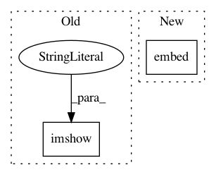

d0c594c666de217c5868c83acd9032ee998d105a,models/COCO.res101.256x192.CPN/dataset.py,,Preprocessing,#,162
Before Change
from visualization import draw_skeleton
draw_skeleton(img, label.astype(int))
cv2.imshow("1", ori_img)
cv2.imshow("2", img2)
cv2.imshow("", img)
cv2.waitKey()
// from vis_detection import visualize
After Change
from lib.utils.visualize import draw_skeleton
draw_skeleton(tmpimg, label.astype(int))
cv2.imwrite("vis.jpg", tmpimg)
from IPython import embed; embed()
img = img - cfg.pixel_means
if cfg.pixel_norm:
In pattern: SUPERPATTERN
Frequency: 4
Non-data size: 2
Instances
Project Name: chenyilun95/tf-cpn
Commit Name: d0c594c666de217c5868c83acd9032ee998d105a
Time: 2018-04-21
Author: chenyilun95@gmail.com
File Name: models/COCO.res101.256x192.CPN/dataset.py
Class Name:
Method Name: Preprocessing
Project Name: chenyilun95/tf-cpn
Commit Name: d0c594c666de217c5868c83acd9032ee998d105a
Time: 2018-04-21
Author: chenyilun95@gmail.com
File Name: models/COCO.res50.256x192.CPN/dataset.py
Class Name:
Method Name: Preprocessing
Project Name: chenyilun95/tf-cpn
Commit Name: d0c594c666de217c5868c83acd9032ee998d105a
Time: 2018-04-21
Author: chenyilun95@gmail.com
File Name: models/COCO.res101.384x288.CPN/dataset.py
Class Name:
Method Name: Preprocessing
Project Name: chenyilun95/tf-cpn
Commit Name: d0c594c666de217c5868c83acd9032ee998d105a
Time: 2018-04-21
Author: chenyilun95@gmail.com
File Name: models/COCO.res50.384x288.CPN/dataset.py
Class Name:
Method Name: Preprocessing